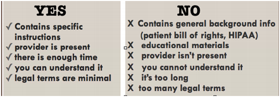

What is sight translation?
Industry guidelines
How to Say no
Parameters
Skills Required
Advantages
Disadvantages
Sight translation is the oral rendition of text written in one language into another language and is usually done in the moment. Sight translation is often requested of an interpreter during an interpreting assignment. It’s a hybrid of translation and interpretation.
Documents with specific instructions are appropriate for sight translation, with the provider present, so that the patient’s questions
can be answered by the provider, notthe interpreter.
Documents that contain general background information(patient bill of rights, HIPAA)
and educational materials are often quite long and so are not appropriate for sight translation. Sight translating these documents is both time consuming and probably fruitless, as the patient is unlikely to remember what was read to him.
Complex and formal language, with many legal terms. Medical interpreters are often unfamiliar with this high register legal terminology and are at risk for rendering it inaccurately if required to translate it on site It’s questionable how much patients will understand and retain of what they simply hear in a long and complex sight translation. The Joint Commission’s standards for obtaining informed consent state that providers are expected to explain the procedure to the patient, including risks and alternate options, and to ensure that the patient has understood the explanation. Even with a translated consent form, a provider needs to be present while the patient reads the form (or the interpreter reads it to the patient).
From The Community Interpreter: An International Textbook,chapter by Marjory Bancroft and Katharine Allen
As a sight translator, you need to have the following skills:
Sight translation is a quicker way of translating, especially when an interpreter is already on site for an assignment. It helps both the client and the professional tremendously, and is incredibly demanding for the interpreter, as it is a combination of both translation and interpretation. When done right, it can potentially be very helpful.
But as it is not yet its own profession, not all translators and interpreters are capable of doing this, as both these professions value different aspects of languages.In situations where sight translation could be valuable (courtrooms, hospitals), accuracy greatly outweighs speed. Since the accuracy of the language also comes from intonation, emotion and gestures, an interpreter who is stripped of these resources might feel a bit lost when it comes to sight translation. Furthermore, they might not be as capable of reading the language as quickly, especially for some of the character based Asian languages, since it uses a completely different writing system than most Western languages. By the same logic, a translator might not be as capable of speaking the language, as translation only deals with proper grammar and accuracy on paper instead of in conversation. A translator might have trouble with the pronunciation of the language.
To know more about sight translation, you can visit the following websites: